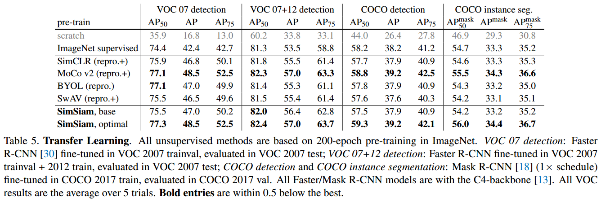

论文精读 对比学习论文综述
对比学习在计算机视觉领域的发展历程，4个阶段：
- 百花齐放：InstDisc（instance discrimination）、CPC、CMC。方法、模型、目标函数、代理任务都还没有统一。
- CV双雄：MOCOv1、SimCLRv1、MOCOv2、SimCLRv2、CPC和CMC的延伸工作、SwaV，这个阶段发展非常迅速，以上这些工作间隔时间都很短，ImageNet上的最好成绩，基本上每个月都在被刷新。
- 不用负样本：BYOL及其后续改进，SimSima把所有方法都归纳总结，融入到SimSima框架之中，算是卷积神经网络做对比学习的总结性工作。
- Transformer：MOCOv3、DINO，用Vision Transformer开展工作。对于自监督学习来说，无论是对比学习还是最新的掩码学习，都是用Vision Transformer做的
1.阶段一：百花齐放
1.1 InstDisc（instance discrimination）
- 论文名称：Unsupervised Feature Learning via Non-Parametric Instance Discrimination
- 论文地址：https://arxiv.org/abs/1805.01978
（1）简介
instdisc：提出了代理任务：个体判别任务。是MOCO中反复提到的文献61，如果MOCO是一篇里程碑式的工作，那么InstDisc就是巨人的肩膀，就是MOCO提到的memory bank方法的论文。
创新点：用个体判别+ NCEloss，做对比学习，取得了不错的无监督表征学习的结果。同时它还提出了用别的数据结构，去存大量的负样本。以及如何对特征进行动量的更新。
对后来的对比学习的工作气到了至关重要的推进作用。
（2）方法
动机
图1，**动机 受到有监督学习结果的启发：让相似图片聚集在一起的原因并不是他们有相似的语义标签，而是图片确实长得太像了。基于此提出了个体判别任务**，这种无监督学习方式，就是把按类别走的有监督信号推到了极致，就是把每个instance（图片）都看成一个类别，目标是能学一种特征，让我们能把每一张图片都区分开。
方法
图2，**方法 简单来说就是想通过一个CNN把图片都编码成一个特征，希望这个特征能在最后的特征空间中尽可能的分开（每个图片都是自己的类）；训练CNN：对比学习**，正样本是图片本身，负样本是数据集中所有其他的图片（用memory bank存放大量的负样本）
做对比学习，大量的负样本特征到底应该存在哪呢？本文用了 memory bank 的形式：就是说把所有图片的特征全都存到memory bank 里，也就是一个字典（ImageNet数据集有128万的图片，也就是说memory bank里要存128万行，也就意味着每个特征的维度不能太高，否则存储代价太大了，本文用的是128维）
前向过程
- batch size：256（256个图片输入，也是正样本）
- 编码器：ResNet50（生成2048维度的特征）
- 降维：128维（每个图片的特征大小）
- 负样本：从memory bank中随机抽（文中抽了4096个负样本）
- 用NCEloss去算对比学习的目标函数，一旦更新完网络，就用这个minibatch中的数据样本所对应的特征，去更换原来memory bank中的特征，这样memory bank就得到了更新。反复这个过程，不停的更新memory bank，让最后学到的特征尽可能的有区分性。
- 测试时，使用KNN进行分类 。获得了训练好的模型后，对于一张图片提取他的特征，将他和memorybank中所有的存储图片特征计算相似度，然后采用k近邻算法，返回最相似的k张图片。最后根据相似度权重投票，得到其类别c。
（3）训练细节
实验超参数的设定
算loss的时候，温度设置是0.07，选了4000个负样本，训练200个epoch，bs是256，起始的lr是0.03（MOCO延续了这些超参数的设定）
Parametric Classifier参数分类器
在传统的参数softmax函数中，对图片x及特征 $v=f_\theta (x)$，被识别为第i类样例的概率为：
其中 v是卷积网络输出的特征表示，i 是预测类别(实例级)，w是需要优化的权重向量。
Non-Parametric Softmax Classifier
作者认为纯粹的参数w阻碍了个体之间的对比，于是文章采用的无参softmax：使用L2正则化的 $v_i^{T}$ 来替换 $w_i^{T}$ ，$ \tau $ 用来调整类别分布的集中程度：
使用Mermory Bank V 来存储上述的 $v_j$，在每个iteration对应修改其值 $ f_i\to v_i $，在初始化时通过单位随机向量对V进行初始化。
Noise-Contrastive Estimation
多分类问题转化为一组二分类问题，其中二分类任务是区分数据样本和噪声样本。
由上式可知，计算瓶颈在于分母，需要枚举所有图片，这样的计算复杂度是无法接受的。为了解决这一问题，我们不再采用原先的采样方式，而是用随机负采样，即从噪音分布当中进行随机采样，真实样本和噪音分布的数据比为 m。
如果噪音分布当中采样n个数据，那么真实样本就采样n/m个数据（一般就为1个）。这样原先的多元问题就转化为了二元问题，则Memory bank中特征表示 v 对应于第i 个样例的概率为：
设定噪声分布为一个均匀分布 $P_n=1/n$ ，则v属于第i个个体的后验概率为：
训练目标为最小化似然函数
其中 $P_d$ 指代真实数据分布，对$ P_d $而言$v$ 是 $x_i$ 的特征；$v ′$ 是来自另一幅图片，从噪声分布 $P_n$中随机采样得到，$v$ 和$v ′$ 都是从Memory Bank中采样得到的。
在正向计算时, 分母项 $\sum{j=1}^{n} \exp \left(\mathbf{v}{j}^{T} \mathbf{f}_{i} / \tau\right)$的计算是无法避免的, 直接计算的计算量同样很大, 于是本文使用蒙特卡罗方法来估计这一项:
Proximal Regularization
给模型训练加了一个约束，让memory bank中的特征进行动量式的更新
由于每个“类”只有1个样例，在每个epoch中，一个“类”只被访问一次，训练的过程比较不稳定。为了使训练更加平滑，在损失函数上增加一项针对v 的惩罚, 来稳定训练过程。
其中， $vi^{(t)}=f\theta(x_i)$ （第t次迭代时backbone的输出特征）， $V={v_i^{(t-1)}}$ 来自于memory bank。这样随着多次迭代，由于 ${v_i^{(t)}}-{v_i^{(t-1)}}$ 的加入，backbone和memory bank存储的特征就逐渐相同了，回到了原始的损失，加速了收敛。
所以Proximal Regularization相当于模型的训练加了一个约束，从而能让 memory bank 里的那些特征进行动量式的更新（当前时刻的输出和上一时刻的输入有关），跟 MoCo 的想法是非常一致的。
（4）总结
Inst Disc 这篇论文也是一个里程碑式的工作：它不仅提出了个体判别这个代理任务，而且用这个代理任务和 NCE loss做对比学习，从而取得了不错的无监督表征学习的结果。同时它还提出了用别的数据结构存储这种大量的负样本，以及如何对特征进行动量的更新，所以真的是对后来对比学习的工作起到了至关重要的推进作用。
1.2 InvaSpread
- 论文名称：Unsupervised Embedding Learning via Invariant and Spreading Instance Feature
- 论文地址：Unsupervised Embedding Learning via Invariant and Spreading Instance Feature (arxiv.org)
（1）简介
这篇文章作者同样没有为自己的方法起名字，所以后面一般将其简称为Inva Spread。Inva Spread是一种端到端的训练方式，直接训练特征本身，无需额外的数据结构（比如上文的memory bank），提升了效率和准确度。作者还使用了新的采样方式，降低了计算复杂度。
简单来说，本文中的正负样本都来自同一个mini_batch。比如对于图片$xi$ ，其正样本就是数据增强后的图片 ${x{i}}’$，而负样本就是这个mini_batch中除了 $(xi,{x{i}}’)$ 之外的所有样本，而不是整个数据集中的所有其它样本。这样负样本数大大减少，可以不需要额外的数据结构来存储，就可以用一个编码器做端到端的训练了。
Inva Spread可以看做是SimCLR的前身，但由于数据增强策略不足以及负样本数量太少，也没有SimCLR提出的mlp projector ，使得最终的训练效果不好，没有太大的影响力。
Inva Spread的作者太穷，没有TPU，只能选择batch_size=256来训练。这样每次迭代的负样本只有255*2个，数量太少，对比学习的效果不够好（也就是在MOCO中说过的字典太小）。而SimCLR的作者来自谷歌，可以使用大量的TPU，最终训练的batch_size=8192，足以达到不错的训练效果。
（2）方法
作者认为提升效率的方法就是直接优化特征本身，拒绝额外的数据结构，也就是用端到端的方式。但这样做会有两种阻碍：一是如果抛弃通过参数w来学习，也不采用memory bank利用时间差更新而让特征自己乘自己，就会使得网络得不到训练。二是不采用NCE等方式，训练的复杂度就太大了。
作者认为，相似图片通过编码器以后，它的特征应该很类似，不同的图片，它的特征出来就应该不类似，这就是题目中说的invariant和 spreading 。于是作者提出的孪生神经网络结构，有效地解决了这两个问题：

对比学习的思想：同样的图片通过编码器，特征应该很类似，不同的图片特征应该不类似。
Invariant：相似的图片，特征应该保持不变性
Spreading：不相似的图片和物体，特征应该尽可能的分散开
具体做法：
- 代理任务：个体判别
- 正负样本的选取：
前向过程：
- 设batch_size=256，即输入256张图片。经过数据增强，又得到了256张增强后的图片。这样每个batch有256个正样本和（256-1）*2个负样本。【和InstDisc不同，InstDisc正样本256，但负样本是从一个memory bank中抽出来的，负样本是4096，甚至可以更大】。为了能用一个编码器做端到端的训练，本文从同一个minibatch中选正负样本。【这就是MOCO中讲到的端到端的学习方式】
- 根据正负样本计算loss（NCE loss 的一个变体），然后更新网络参数。相似的特征在特征空间中尽可能的接近，与其他的特征应该尽可能的拉远。目标函数式NCEloss的变体。
- 训练结果表示在最后特征空间中，就是绿色的两个球靠近，和所有别的球远离；其余类似。
（3）总结
这篇论文，属于另一个流派，也就是端到端的学习，而且只用一个编码器，不需要借助外部的数据结构去存储大量的负样本，它的正负样本都来自于同一个 minibach。
既然它跟 SimCLR 这么像，为什么它没有取得那么好的结果呢？就是之前在MoCo那篇论文里反复强调过的，就是这个字典必须足够大，也就是说在做对比学习的时候，负样本最好是足够多，而本文的作者是没有 TPU 的，所以说它的 batch size 就是256，也就意味着它的负样本只有500多个，再加上它还缺少像 SimCLR 那样那么强大的数据增广以及最后提出的那个 mlp projector，所以说呢这篇论文的结果没有那么炸裂，自然也就没有吸引大量的关注，但事实上它是可以理解成 SimCLR 的前身
1.3 CPC
- 论文名称：Representation Learning with Contrastive Predictive Coding
- 论文地址：https://paperswithcode.com/paper/representation-learning-with-contrastive
一般机器学习分为判别式模型和生成式模型，个体判别显然是属于判别式范畴的，那肯定就会有一些生成式的代理任务，比如最常见的预测型的任务。
CPC：contrastive predivtive coding，一个可以处理音频、图片、文字还可以使用在强化学习中的通用模型。用预测的代理任务做对比学习。
本文使用音频为输入，如下图所示：

- 对于一个输入序列$x$，当前时刻为$t$。$t$时刻输入经过编码器 $g_{enc}$ 得到编码特征$ {z_t} $。
- ${zt}$ 经过自回归模型 $ g{ar} $（比如RNN/LSTM）得到输出$ct$ （context representation，上下文特征，因为含有之前时刻的信息）。如果 $c_t$表示的足够好，包含之前所有时刻的信息，那么应该可以用来预测未来时刻的输出特征$z{t+i}$ 。
- 对比学习的正样本就是未来的输入通过编码器以后得到的未来时刻的特征输出，负样本的定义很广泛，比如，可以任选输入，通过编码器得到输出，那预测应该是不相似的。。
这套思想是很普适的，输入可以换成句子，用前面的单词去预测后面的单词的特征的输出；可以换成一系列的图片patch，左上到右下，可以用上半部分的图片特征预测下半部分的图片特征。
1.4 CMC
- 论文名称：Contrastive Multiview Coding
- 论文地址：https://paperswithcode.com/method/contrastive-multiview-coding
（1）简介
CMC使用一个物体的多个视角来作为正样本。这个思想来自于人类对世界的感受、观察。
在摘要中，作者说人类观察这个世界是通过很多个不同视角的传感器，比如说眼睛或者耳朵，来给大脑提供不同的信号。每一个视角都是带有噪声的，而且有可能是不完整的。但是最重要的那些信息，比如物理性质，几何形状以及语义信息，在所有的这些视角中间共享。例如一只狗可以被看到、听到、感受到。
基于此，作者认为一个强大的特征，应该具有视觉不变性（不论是看到还是听到，都应该能判断出那是一只狗）。所以CMC目的，就是最大化同一个场景不同视角的互信息，并且可以扩展到任意数量的未知视角，且视角越多效果越好。
本文定义正样本的方式很广泛，一个物体的多个视角都可以被当做正样本。
第一个做多视角的对比学习，不仅证明了对比学习的灵活性，也证明了多视角、多模态的可行性。【接下来OpenAI就出了clip模型：如果有一个图片以及描述它的文本，这就是一个正样本对，用来做多模态的对比学习】
（2）方法
正负样本
数据集：NYU RGBD，有四个视角，原始图像、深度信息（距离观察者的远近）、surface normal（表面法线）、物体的分割图像
正样本：虽然不同的输入来自不同的传感器，或者来自不同的模态，但是所有的输入都对应的一个东西，他们就应该互为正样本，也就是，绿色的点在特征空间中应该非常接近。
负样本：如果随机选择一张图片，不配对的，得到的特征就应该远离。
局限性：在处理不同视角/模态的时候，可能需要不同的编码器，因为不同的输入可能长得很不一样，这样计算代价就会高。比如在CLIP中，文本端用的是bert，图像用的是vit。transformer有可能同时处理不同模态的数据【MA-CLIP: Towards Modality-Agnostic Contrastive Language-Image Pre-training 用一个transformer同时处理两个模态，效果反而更好】不用针对每个数据去做特有的改进。
目标函数
CPC可以看做是学习过去和未来两个视角，个体判别是学习一张图片的不同crops，但使用的却都是一种目标函数。本文使用的也是普通的NCELoss目标函数，但作者将其进行扩展以适应不同视角的需求，对比学习也扩展到了很多其他领域。
两个视角目标函数（两视角对比着学）：
其中，$h{\theta}\left(\left{v{1}, v{2}\right}\right)=\exp \left(\frac{f{\theta{1}}\left(v{1}\right) \cdot f{\theta{2}}\left(v{2}\right)}{\left|f{\theta{1}}\left(v{1}\right)\right| \cdot\left|f{\theta{2}}\left(v_{2}\right)\right|} \cdot \frac{1}{\tau}\right)$
即固定 $v{1}^{1}$ ，列举 $v{2}^{j}$ ，同样的也可以反过来固定 $v_{2}^{1}$ 于是：
这里的 $f{\theta }^{1}$ 和 $ f{\theta }^{2} $是两种backbone，不共享参数，这个和Spreading Instance是有区别的。
多个视角目标函数，有两种范式：
- 仅将一个视角和其他所有视角对比： $L{c}=\sum{j=2}^{M}L(V{1},V{j})$
- 每个视角相互对比：$\mathcal{L}{F}=\sum{1 \leq i<j \leq M} \mathcal{L}\left(V{i}, V{j}\right)$
cmc原班作者人马还用对比学习的思想做了一篇蒸馏的工作。对于teacher 模型和student 模型，不论用什么网络，不论这个网络是好是坏是大是小，只要你的输入是同一张图片，那得到的这个特征就应该尽可能的类似，即二者的输出尽可能的相似。通过这种方式把 teacher和student做成了一个正样本对，从而可以做对比学习。
（3）总结
CMC正负样本确定的方式由个体升级成了个体的不同的视角（如色彩模型）。它同样使用了NCE，但将其扩展以适应不同的视角。CMC采用多视角对比学习，证明了对比学习的灵活性，也同时证明了多视角多模态的可行性，为之后的CLIP工作（图文配对的多模态对比学习）打下了基础。
但是本文也有一个局限，即处理不同的视角（模态）时，可能需要不同的编码器，因为不同的输入特点不一样。 如果每个视角都有一个编码器，那么训练的成本就有点高（比如在CLIP里，文本编码器是BERT，图片编码器是ResNet或者ViT）。
所以这也是现在Transformer最吸引人的地方，这个结构可以同时处理文本和图片，那么就可以用一个解码器处理两种模态，而不用做针对每种数据去做特有的改进。今年在ICLR上发表的MA-CLIP，就是用一个Transformer去同时处理两个输入模态，效果反而更好。
1.5 总结
第一阶段的四篇论文，使用的代理任务不同（个体判别、预测未来、多视角多模态）、目标函数不同（NCE、InfoNCE、NCE的其他变体）、模型不同（InvaSpread仅用一个编码器、InstDisc用一个编码器和memory bank、CPC是一个编码器和一个自回归模型、CMC有两个甚至多个编码器）任务不同（图像、视频、音频、文字、强化学习）
- InstDisc：一个编码器+memory bank，特征一致性比较差
- Inva Spread：只使用一个编码器进行端到端训练，但是字典太小，负样本不够
- CPC：一个编码器+一个自回归模型
- CMC：有两个甚至多个编码器
2.阶段二：CV双雄（19年中-20年中）
CV双雄指的就是MOCO和SimCLR
2.1 MOCO
- 论文名称：Momentum Contrast for Unsupervised Visual Representation Learning
- 论文地址：https://paperswithcode.com/paper/a-simple-framework-for-contrastive-learning
主要贡献：把之前的对比学习方法归纳总结成一个字典查询的问题。提出队列和动量更新的编码器构造一个又大又一致的字典，能帮助更好的对比学习。
MoCo跟Inst Disc是非常相似的：
- 它用队列取代了原来的memory bank作为一个额外的数据结构去存储负样本
- 它用动量编码器去取代了原来loss里的约束项，从而能达到动量的更新编码器的目的，而不是动量的去更新特征，从而能得到更好的结果
但是整体的出发点以及一些实现的细节都是非常类似的
MoCo 的这个实现细节：
- 首先从模型的角度上来说，它用的是残差网络，它的基线模型都用的是Res 50，其实Inst Disc也用的是Res 50，模型上是一样的
- 最后每个图片的特征维度也沿用了128维
- 它也对所有的特征做了L2 归一化
- 至于目标函数，MoCo 采用的是info NCE，而不是像Inst Disc是NCE但是算loss用的温度也是0.07
- 数据增强的方式也是直接借鉴过来的
- 包括后面训练的学习率0.03，训练200个epochs这些也都是跟Inst Disc保持一致的
所以，说MoCo是Inst Disc一个改进型工作也不为过，但是MoCo真正出色的地方其实有两点
- 改进简单有效，而且有很大的影响力，这个动量编码器的改进一直沿用到了最新的工作，带来好的效果。
- 另外moco的写作也很精彩，自顶向下：并没有按照传统简单直白的写作方式，先对比过去的工作，谈局限性，然后提出自己的方法。
MOCO论文写作思路
- 引言中，第一段写CV和NLP的区别，以及到底为什么无监督学习在CV这边做的不好；第二段开始讲对比学习，直接把对比学习的方法总结成一个字典查找的问题；然后在CV和NLP大一统、对比学习被看做字典查找也大一统的大框架下，提出了MOCO这个框架，希望能用一个又大又一致的字典，去整体的提高对比学习的性能。
- 方法部分，没有模型总览图、没有说模型、任务。而是从目标函数入手，说我们用的是InfoNCE，先定义正负样本，然后网络结构，然后实现细节和伪代码。3.1中，为了让MOCO看起来更普适，没有直接定义输入是什么，也没有定义网络结构是什么样
- 什么样的输入都可以（图片、图片块CPC、上下文的图片块）
- 网络：query和key的编码器既可以相同（InvaSpread）、部分共享和完全不同的（CMC多个视角所以多个编码器）
2.2 SimCLR
- 论文名称：A Simple Framework for Contrastive Learning of Visual Representations
- 论文地址：Big Self-Supervised Models are Strong Semi-Supervised Learners
（1）简介
介绍对比学习常用SimCLR当例子，因为它概念上更容易理解，方法也很容易解释，只不过就是batchsize 太大，一般人不好上手。
（2）方法
x：一个minibatch的图片。xi和xj：x经过不同的数据增强，他俩就是正样本。正样本个数就是batchsize ，负样本就是剩下的样本以及他们数据增强后的样本2（batchsize -1）。f函数：是编码器，两个编码器共享权重。h：编码器得到的特征。g函数：projector，就是一个全连接层跟着一个relu的激活函数。（就是这么的一个简单的错做，能让最后学到的特征在imagenet这个分类任务上提10个点）。只有在训练的时候用，做下游任务的时候，只用特征。这个g函数只是为了让模型训练的更好，为了公平对比在下游任务上不使用。- 选用的损失函数是
NT-Xent loss（the normalized temperature-scaled cross entropy loss）：normalized是指在特征后面做了L2归一化，temperature-scaled：在loss上乘一个τ）正样本之间是否能达到最大一致性。所以和infoNCE loss也是非常接近的。
前向过程：图片进入编码器编码，然后projector降维，最后算一个对比学习的loss。
projector在训练时才使用，推理时直接去掉，只用特征h特征。
（3）SimCLR和InvaSpread
- SimCLR用了更多的数据增强（裁剪、改变色彩、旋转、cutout、高斯噪声、高斯模糊、sobel滤波器）
- 加了一个
g函数（可学习的非线性变换），就是一个MLP层。 - 用了更大的batchsize，而且训练的时间更久
SimCLR可以被认为是inva spread的改进工作。其最大创新点就是在图片编码特征之后加了一个projector，但就这么简简单单的一层mlp，能让模型在ImageNet 分类任务上直接涨了近10个点。
SimCLR框架中几乎所有单独的组件都出现在以前的工作中，尽管具体的实现可能有所不同。但SimCLR的优势不是任何单一设计的选择，而是把所有的技术结合起来得到的结果。我们提供了一个全面的比较，非常详细的消融实验，在附录C。
SimCLR中提出的很多技术，都对后续的工作产生了长远的影响：
- 在编码器之后加一个MLP层（MOCOv2，BYOL）
- 数据增强技术
- 用LARS优化器去做大batchsize 的模型训练（BYOL）
（4）实验
模型效果
SimCLR (4×) 这个模型可以在 ImageNet 上面达到 76.5% 的 Top 1 Accuracy，比当时的 SOTA 模型高了7个点。如果把这个预训练模型用 1%的ImageNet的标签给 Fine-tune 一下，借助这一点点的有监督信息，SimCLR 就可以再达到 85.5% 的 Top 5 Accuracy，也就是再涨10个点。
数据增强
作者试验了以上10种数据增强，比如随机裁剪、变换色彩、翻转、Cutout、高斯噪声、blur噪声等等；并做了如下的消融试验（除了最后一列，余下是两两组合）。最后发现随机的裁剪和随机色彩变换组合效果最好。
Projection head 及特征维度
- linear ：只有全连接层，不接Relu激活函数
- None：没有Projection head，直接做对比训练
- non-linear ：本文的方法，加了Projection head。（后面跟Relu，所以是非线性）
- 可以发现使用Projection head，结果提了近10个点
- 最后z的维度不论是32、64还是2048其实都没太大区别，这就是为什么对比学习现在一般都选一个比较低的特征维度，因为128就够了。
2.3 MOCOv2
- 论文名称：Improved Baselines With Momentum Contrastive Learning
- 论文连接：https://paperswithcode.com/paper/improved-baselines-with-momentum-contrastive
（1）简介
因为moco和SimCLR的效果实在太好，2020年就掀起了对比学习的狂潮。直到2020年底，vision transformer出来以后才逐渐消退。
发现SimCLR的效果很好，技术都是即插即用型。就在MOCO上做很简单的改动：把MLP projection head和更多的数据增强用起来，就刷新了imagenet上的最好成绩，比过了SimCLR。
（2）改进策略
MoCov2主要是借鉴了SimCLR而做的优化，比如引入了mlp projection head以及使用更多的数据增强。MoCov2刷新了ImageNet 上的最好成绩，比之前的MoCo以及最新的SimCLR都高很多 。其上传的日期是3月9日，离SimCLR的发布还不到一个月。
MoCov2对比MoCo主要有4个改动：
- 添加 projection head
- 使用更多的数据增强
- 训练时使用cosine的learning rate schedule
- 训练的epoch，从200增加到800
（3）实验
改进策略效果对比
上图列出了模型效果对比图。
- MLP表示增加projection head，可以看到只增加这一点，就提了近6个点
- aug+和cos分别表示上面提到的数据增强和cosine schedule
- 灰色行是有监督baseline模型
与SOTA模型分类效果对比
下面是和MoCov1以及 SimCLR 在ImageNet数据集上分类效果对比。
硬件资源对比

MOCO非常省内存只需要5个G，而且训练只需要53个小时（imagenet这种规模的数据集上，两天多已经算很快了）
端到端（InvaSpread、SimCLR）：SimCLR在小batchsize的时候效果远不如MOCOv2（因为字典不够大，负样本不够多，导致对比学习的对比不是很有效，而且不仅效果低内存占用也明显高，训练时长也长了十几个小时，端到端要性能差不多batchsize就要4096，这对硬件要求太高了）
2.4 SimCLRv2
- 论文名称：Big Self-Supervised Models are Strong Semi-Supervised Learners
- 论文连接：Big Self-Supervised Models are Strong Semi-Supervised Learners
（1）简介
SimCLRv2的主要思想体现在其标题里，即大的自监督模型很适合做半监督学习。在摘要中，作者提出：一种从少量带标签数据+大量无标签数据中进行学习的方案是：无监督预训练（必须是大模型）+有监督微调，这种半监督学习的方案在ImageNet上极为有效，具体的可以总结为三步：
pretrain：在无标签数据上无监督训练（SimCLR对比学习）一个Big ResNet模型（模型大小至关重要）以学习广义视觉特征表达。fine-tune：在少量有标签数据上通过进行有监督的微调distill：用微调后的模型作为teacher模型，在之前的无标签数据集上生成伪标签，然后训练一个student模型进行自监督训练（蒸馏阶段采用KL散度）。
微调后，作者发现：模型的任务已知预测属性可以进一步改善并蒸馏到一个更小的网络中。为此，作者对无标签数据进行了二次利用以促使学生网络尽可能的模拟老师网络的标签预测性能，且蒸馏阶段采用伪标签方式且不会造成额外的更多复杂度。
整个框架其实也是受启发于google的另外一篇工作 Noisy Student。noisy student就是在ImageNet数据集上先训练了一个 teacher 模型，然后在JFT 300M那个数据集上生成了很多的伪标签，最后一起训练了一个student模型，其精度为88，霸榜ImageNet快一年。
SimCLRv2在仅仅采用1%/10%有标签数据时，backbone使用ResNet50就取得了73.9%/77.5%的top-1精度。
noisy student 的工作
- 因为noisy student就是在ImageNet数据集上先训练了一个 teacher 模型，然后在JFT 300M那个数据集上生成了很多的伪标签，最后一起训练了一个student模型，而这个 student 的模型算是 ImageNet 上的SOTA，大概是88点多的准确率，霸占了ImageNet上这个sota很长时间，大概有一年的时间
- Vision Transformer就跟这个 noisy student 比过，因为截止到那个时候，noisy student还是ImageNet上的 SOTA
（2）算法
模型结构如下图所示，训练过程就是上面提的三步：
- 第一部分：SimCLRv2，怎样自监督或自监督的对比学习，去训练一个大的模型出来。
- 第二部分：一旦有了一个很好的模型，只需要一小部分有标签的数据，去做一下有监督的微调。
- 第三部分：微调结束了就相当于有了一个teacher模型，就可以用这个teacher模型去生成很多伪标签，这样就可以在更多的无标签数据上做自学习了。
我们要看的是第一部分，看作者怎么把SimCLR改进了。
SimCLRv2相比SimCLRv1有三处改进：
- 大模型：backbone从
ResNet50替换为ResNet152+SK net（selective kernels） 加深
protection head：从一层加到两层。protection head在SimCLRv1和MOCOv2中都被证明很有用，所以作者考虑多家几层。最后发现加到两层效果就够了
引入了动量编码器：使用了类似
MOCO的动量编码器，效果提升了一个点。作者解释是，
SimCLR模型的 batch_size已经够大了，也就是字典的大小和字典里特征一致性，SimCLR v2 都已经做的很好了。换成MOCO这种队列结构的动量编码器，虽然可训练的负样本更多，但是提升没有那么明显了。
（3）微调
SimCLRv1在微调时，是去掉 $g(\cdot )$（projector层），只保留编码器 $f(\cdot )$ 进行微调，即 $f^{task}(x{i})=W^{task}f(x{i})$ ；SimCLRv2在微调时，是保留 $ g(\cdot ) $的第一层 ，即 $ f^{task}(x{i})=W^{task}\cdot \sigma (W^{MLP}\cdot f(x{i})) $
2.5 SwAV
- 论文名称：Unsupervised Learning of Visual Features by Contrasting Cluster Assignment
- 论文地址：https://paperswithcode.com/paper/unsupervised-learning-of-visual-features-by
（1）简介
SwAV即swap assignment view的缩写，意思就是一张图片不同视角的特征可以互相预测，因为来自同一张图片的不同视角特征按道理来说都是相似的。具体的做法，就是将聚类加入到了对比学习中。（将匹配问题转为预测问题，预测时借助簇类中心）
作者认为之前的对比学习，直接拿所有图片的编码特征去做对比有点原始而且计算量太大，因为所有的图片都是自己的类。作者考虑，能不能不做近似，能不能借助一些先验信息，一些更简洁的东西比进行对比，而不是和所有负样本直接进行对比。由此作者提出了可以和聚类中心特征进行对比（128万张图片被聚成3000个簇类中心cluster center）。
比如MoCo在ImageNet上训练那就有128万类，即使在计算loss时取近似，只是取队列编码器里的作为负样本，那负样本也有6万多个。 之前的一些聚类方法常常将
ImageNet数据集聚成3000个簇类中心。
作者选择聚类这个想法有两个原因。首先，聚类方法也是一种无监督的特征表示学习方式，其目标也是希望相似的物体聚在一起，不相似的物体尽量互相远离，这个思想与做法和对比学习都比较接近；第二就是论文一作之前是做聚类的，比如deep cluster，也是一篇很好的无监督学习论文。
（2）算法
- 左边是过去的对比学习方法：图片经过不同的数据增强，通过编码器得到特征，然后对特征做一个对比学习的loss。
- 右边是
SwAV：认为特征和特征作对比，有点费资源，因为每个图片都是自己的类，那么剩下的都是负样本，负样本太大只能取近似，能不能不做近似？能不能借助一些先验信息，不去和大量的负样本比，而去跟一些更简洁的东西比呢？
去跟聚类中心比，就是右图中的prototypes C（矩阵，维度是D×K，D是特征的维度，K聚类中心的个数）
前向过程：一个minibatch的图片，做两次数据增强，分别通过编码器得到两个特征，让特征和prototype C去生成一个目标，也就是Q1和Q2（相当于ground truth）。

Swapped prediction：按道理x1和x2是同一张图片，他们是一对正样本，那么生成的特征应该很相似，Z1·C可以预测Q2，点乘的结果就是预测；ground truth就是聚类分类得到的Q1和Q2。通过换位预测的方法，SwAV可以对模型进行训练。
用聚类的好处是什么？
- 减少计算量：如果要和很多的负样本作类比，可能就需要成千上万的负样本，即使如此，也只是个近似。而现在如果只是和聚类中心对比，用几百甚至3000个聚类中心就足以表示了，因为其实也并没有那么多类，imagenet也就1000类，COCO才80类，所以3000个聚类中心就足够用了，这相当于几万个负样本来说，是小了很多的。
- 聚类对比更加合理：这些聚类中心是有明确的语义含义的，之前只是随机抽样负样本做对比的话，可能类别不均衡甚至可能是个正样本的，所以不如使用聚类中心有效。
（3）实验
1. 不同模型在ImageNet上的Top-1精度对比
下面是将模型作为特征提取器后在ImageNet上训练不同epoch时的的top-1精度对比（backbone都是ResNet50）

不仅比之前讲过的方法效果好，还要比接下来要讲的BYOL和SimSiam效果都要好。算是卷积神经网络里，用res50分刷的最高的一篇工作了。
对比做的是imagenet上的Linear classification，就是提前预训练好的模型，冻住主干网络，只训练最后的分类头（MLP层）。前六个不是对比学习的方法，结果都比较低。有了对比学习开始，MOCO就开始上60了。
SwAV是把主干网络冻住情况下做的，都已经非常逼近从头到尾都在imagenet上训练的有监督基线模型。
右图是只把res50变宽，SwAV的结果还能不停的涨。当用5倍的模型的时候，SwAV的结果已经和有监督的模型差距非常小。
SwAV的性能这么好的原因：
- 和聚类的方法融合。
- multi-crop：一个trick
（4）Multi-crop增强
一个trick。之前的对比学习方法用的是两个crop，就是一个正样本对就是两个图片x1和x2，如图所示，图片先resize到$256256$，然后随机crop两个$224224$的图片当成x1和x2，因为两张图片都非常大，所以重叠的区域也非常多，他们代表一个正样本，总之就是两个crop。这么大的crop抓住的是整个场景的特征，如果想学习局部物体的特征该怎么办？

所以最好能多个crop，就能关注到局部的物体了。但是增加crop（文中的view）模型的计算复杂度一下就提高了，相当于使用了更多的正样本，如何能使用更多的正样本，而又不增加更多的计算成本？
方法：把crop变小，取两个较大的crop争取学到全局特征，然后为了增加正样本的数量，为了学习局部特征，再去随机选4个小一点的crop。正样本数量增多了，但是通过取舍，整体的计算代价是差不多的。
这个multi-crop技术很有用，而且不仅对SwAV有效。

如图，基线模型就是2*224，用了multi-crop技术的效果。
- SimCLR涨了2.4个点。
- 聚类的方法用了这个技术，提点效果更显著。
如果不用multi-crop这个技术，SwAV的效果和mocov2是差不多的，也就是说一个纯聚类的方法，或者聚类和对比学习结合的方法，其实并没有什么优势，真正提点的是multi-crop这个技术，而且这个技术非常普适，思想也很简单，就是全局和局部的特征都要关注。所以接下来的很多工作借鉴的都是multi-crop这个技术，而不是SwAV这篇工作本身。
2.6 CPCv2
简单提一下。CPCv2其实也是融合了很多的技巧，它用了更大的模型、用了更大的图像块、做了更多方向上的预测任务，把batch norm 换成了 layer norm，而使用了更多的数据增强，所以这一系列操作下来，CPC v2直接就把CPC v1之前在 ImageNet 上40多的准确率一下就拔到70多。
2.7 infoMin
What Makes for Good Views for Contrastive Learning，到底选择什么样的视角才能对对比学习更好。
infomin原则：最小化互信息，以前都是最大化互信息，都是想要两个视角之间的互信息达到最大，本文是想要恰好合适的互信息，如果最后互信息比你所需要的互信息要多，那也是一种浪费，而且有可能泛化做的不好。如果互信息比需要的少，可能就达不到最优的性能。所以作者的意思就是，不能一味的最大化互信息，而是要不多不少刚刚好，按照infomin的原则，去选择合适的数据增强，然后拿到合适的对比学习视角，作者发现对于很多的方法都有提升。
2.8 总结
第二阶段，很多细节已经趋于统一了
- 目标函数都是infoNCE或者其变体
- 模型都是用一个编码器后面加一个projection head
- 更强的数据增强
- 动量编码器
- 训练的更久
- 准确度逐渐逼近有监督的基线模型
3.第三阶段：不用负样本
其实在上一阶段已经有不用负样本的趋势了，比如SwAV就是用的聚类中心进行对比。接下来要讲的BYOL和SimSiam其实就是正样本自己在玩，已经没有负样本或者聚类中心这样明确的一个对比的东西去做对比了。
3.1 BYOL
- 论文名称：Bootstrap Your Own Latent - A New Approach to Self-Supervised Learning
- 论文连接：https://paperswithcode.com/paper/bootstrap-your-own-latent-a-new-approach-to-1
- BYOL分析博客：Understanding self-supervised and contrastive learning with “Bootstrap Your Own Latent” (BYOL) - imbue
- 回应博客论文：BYOL works even without batch statistics
（1）简介
BYOL就是论文标题Boostrap Your Own Latent的缩写。Latent、Hidden、Feature、Embedding其实都是特征的意思，就是各种花里胡哨的用法而已；Boostrap就是类似自我改造的意思。
BYOL使用了一种新的对比学习方法（A New approach），即没有引入任何形式的负样本，而是用图片的编码特征（梯度更新）去预测自己的编码特征（动量更新），模型就这样训练起来了。（相当于用一个视角的特征取预测另一个视角的特征，将匹配转为预测问题）。这种训练方式类似SwAV，但是这次连簇类中心都没了，所以听起来有点不可思议。后来还有一篇博文分析了BYOL，认为其实是在使用BacthNorm时引入了隐式的负样本进行对比学习。BYOL作者一听不高兴了，这样不是说明我的工作大大折扣了吗，所以立马写了一篇技术实验论文驳斥了这个说法，证明了对比学习完全不使用负样本是可行的（后面会详细介绍）。
为什么不用负样本这么新奇？
因为在对比学习中负样本是一个约束，在算目标函数的时候，只有正样本，那么目标只有一个：让所有相似的物体的特征也尽可能的相似，这时候就有一个很明显的捷径解，就是说如果一个模型，不论什么样的输入，都会返回相同的输出，那么出来的所有特征都是一模一样的，那这个去算对比学习的loss就都是0，意思就是模型直接躺平了根本不用学，直接用这个捷径解trivial solution，就能完美解决你的问题。只有加上负样本这个约束，不光相似的物体要有相似的特征，不相似的物体要有不相似的特征，这样模型才有动力继续学，因为如果输出的所有特征都一样，那么负样本这边loss就无穷大，所以模型必须想办法让正样本和负样本的loss都往下降，达到一个最优解。所以负样本在对比学习里是个必须的东西，能防止模型学到这个捷径解（model collapse或learning collapse）。
（2）算法
前向过程：
- 输入x经过两次不同的Aug得到 $v$，${v}’$
- 编码特征
- 上面的online分支 v 经过编码器$ f{\theta } $得到编码特征 $y{\theta }$ ，$f_{\theta }$是梯度更新
- 下面的target分支 $v’$ 经过编码器 $f{\xi }$ 得到编码特征 ${y{\xi }}’$ ， $ f{\xi } $ 和 $f{\theta }$ 模型结构一样，但用的是动量更新的方式。也就是说， $ f{\xi } $引入了MoCo中的动量编码器，其参数和 $ f{\theta } $不同，但是结构一样。
- 如果这两个编码器都是ResNet50，则输出特征是2048维
- projection head
- 使用类似
SimCLR中一样的projection head $ g{\xi } $和 $ g{\theta } $（也是一个MLP，BYOL中也把这个结构叫predictor），将特征降到256维，得到特征$z{\theta },{z{\xi }}’$。 - $g{\xi }$ 和 $g{\theta}$分别是梯度更新和动量更新，但二者结构一样。
- 使用类似
- 对比预测
- 在 SimCLR中，是在$z{\theta },{z{\xi }}’$ 之间做maximum agreement，即使不同增强后再编码和MLP映射后的特征尽可能的接近
- 在SwAV中，是将 $y{\theta },{y{\xi }}’$ 分别和K个簇类中心c计算相似度得到$q\theta, q\xi$ ，然后互相预测作对比学习（ $y{\theta }$ 和相似度矩阵点乘的结果去预测$ q\xi $ ，反之亦然）
BYOL中，上分支使用prediction head（也是predictor结构）将 $z{\theta }$ 映射为 $q{\theta }(z{\theta })$ ，然后用 $q{\theta }(z{\theta })$ 去预测 $ sg({z{\xi }})’ $来进行对比学习，其中sg表示stop-gradient，因为下分支编码器是动量更新。- 损失函数是
MSELoss，即直接计算预测特征 $q{\theta }(z{\theta })$和标签 $sg({z_{\xi }})’$ 这两个向量之间的mse。
推理：
当训练完成只留下编码器$y_{\theta }$，剩下所有的东西都被拿掉了。然后用这个编码器编码图片，输出维特征去做下游任务的推理。
对比：
- 按过程来看，
BYOL就是将上分支输入经过一个梯度更新的编码器和两个predictor得到的 $q{\theta }(z{\theta })$ ，去预测下分输入经过一个动量更新的编码器和一个predictor得到的$sg({z_{\xi }})’$ 。 - 所以可以看出
BYOL使用了MoCo的动量编码器、SimCLR的projection head以及预测任务，但是没有负样本，目标函数也不一样。通过自己预测自己就学起来了。 BYOL的两个分支叫online和target，其实就相当于MoCo中的query和key分支。
（3）为何不使用负样本这么重要
在对比学习中，负样本是一个约束。如果在算目标函数的时候只有正样本，也就是让所有相似的物体的特征也尽可能的相似，此时就有一个很明显的捷径：模型输出恒等于输入，对比学习的oss永远都是0，模型直接就躺平（也叫模型坍塌model collapse，表示模型根本就没有在学习）。
只有加上负样本这个约束，即不相似的物体也要有不相似的特征，这样模型才会继续学习，否则负样本的loss就无穷大了。所以加入负样本能防止模型学到捷径，是必须的。
BYOL之所以神奇就是它没有用负样本，正样本自己跟自己学最后在ImageNet上也达到了74.3的top-1准确率，也是相当高了。
（4）不同对比学习模型projection head结构对比
SimCLR
- 编码特征y经过projection head映射为z，z之间进行对比学习。
- projection head结构如右图所示：
Linear（2048×2048）+BN+ReLU +Linear（2048×128）+BN。
MoCov2（MoCo v1没有用projection head）
MoCov2确实是用了projection head，就是 $gθ$ ，但是$gθ$ 里面是没有batch norm的，其结构是Linear（2048×2048）+ReLU +Linear（2048×128）。
BYOL
$ g{\xi },g{\theta },q_{\theta } $都是projection head，其结构为Linear+BN+ReLU +Linear
（5） BYOL被认为是使用了隐式负样本
BYOL发布到arxiv之后，在reddit、twitter、知乎全都引起了剧烈的讨论，因为大家都觉得很不可思议；不用负样本，只是自己预测自己，模型的学习怎么能不坍塌。由此引出了一篇博文《Understanding self-supervised and contrastive learning with “Bootstrap Your Own Latent” (BYOL)》。
这篇博文的作者在复现BYOL时遗漏了一个小细节，即借用了 MoCov2的projection head导致projection head中没有加batch norm，最终模型坍塌。作者就觉得实在是太奇怪了，所以赶紧又做了一些额外的实验，如下表所示 ：
| Name | Projection MLP Norm | Prediction MLP Norm | Loss Function | Contrastive | Performance 5 |
|---|---|---|---|---|---|
| Contrastive Loss | None | None | Cross Entropy | Explicit | 44.1 |
| BYOL | Batch Norm | Batch Norm | L2 | Implicit | 57.7 |
| Projection BN Only | Batch Norm | None | L2 | Implicit | 55.3 |
| Prediction BN Only | None | Batch Norm | L2 | Implicit | 48 |
| No Normalization | None | None | L2 | None | 28.3 |
| Layer Norm | Layer Norm | Layer Norm | L2 | None | 29.4 |
| Random | — | — | — | None | 28.8 |
Projection MLP Norm：第二第三列这里指的是两层Projector有没有用归一化Loss Function：普通对比学习loss是交叉熵损失函数，而BYOL用的是L2 loss，即mse 损失函数。performance：测试模型性能是在一个STL-10的数据集上做的，不是 ImageNet，但衡量标准还是准确度。
实验结果
random：使用一个随机初始化的残差网络，没有经过任何训练，直接去抽特征。然后在这个特征上训练一个全连接层，最后的结果是28.8。所以这个结果是一个完全随机的结果。- 正常的
BYOL：两层Projector都使用BN，效果最好 BYOL变体：只使用一层BN，模型起码 也有学到东西。如果是都用LN或者干脆都不用BN，模型坍塌，什么都没学到。
最终分析
作者认为在Projector层使用BN之后，是计算了整个batch的均值和方差，这意味着是有信息泄露的（MoCo使用了 Shuffling BN ，就是为了防止这种信息泄露）。模型不光是正样本自己和自己学，还和batch norm产生的平均图片（mode，中值）对比着学，这种平均图片就类似 SwAV的聚类中心了。
所以说，这篇博客的作者认为batch norm是BYOL能够成功的关键，其实是做了一种隐式的对比学习，这个观点很快就被大家所接受了，因为听起来确实很合理，而且后续试验也都验证了这一点。batch norm确实至关重要，拿掉batch norm以后模型就是不好训练，对超参数的设置非常的敏感，稍有不慎它就啥也不学了。
（6） BN只是加强模型的稳定性，BYOL不使用负样本的思想是没问题的
BYOL的作者看到博客就急了，如果真是这样的话，BYOL就还是没有逃脱出对比学习的范畴，它还是找了一个东西去做对比，其创新性就大大降低了。所以作者赶紧做实验，看看能不能找到BYOL 模型不坍塌的另外一种解释。最终又写了一篇论文进行回应。
这篇论文叫BYOL works even without batch statistics，即在没有batch norm的时候BYOL照样能工作，详细的消融实验结果如下表所示 ：
作者是在encoder（比如ResNet50）和两层Projector里分布使用BN/LN和什么都不用去做对比实验，最后发现：
- BN非常关键：只要是projector中没有BN的地方，
SimCLR性稍微下降；但是BYOL全都模型坍塌了 - 有BN也会坍塌：作者找到了特例（红色框），即使当projector有BN的时候，
BYOL还是训练失败了 。如果BN真的很关键，它真的提供了隐式负样本的对比学习的话，训练就不应该失败 - 完全没有BN，
SimCLR也坍塌（最后三列的结果。要注意SimCLR只有一层projector）。这表明完全不用归一化，SimCLR这种使用负样本进行对比学习的方式也无法训练。
最终结论：BN跟它原来的设计初衷一样，主要作用就是提高模型训练时的稳定性，从而不会导致模型坍塌 。作者进一步延伸，如果一开始就能让模型初始化的比较好，后面的训练即使离开了BN也没有问题。 作者为此又设计了一个实验，借鉴BEiT中的group norm+weight standardization （前者也是一种归一化方式，后者是一种模型初始化的方式，但都没有进行批量统计操作），BYOL的top-准确率可以达到74.1%，和原来精度可以认为是一样了（74.3%）。
3.2 SimSiam
- 论文名称：Exploring Simple Siamese Representation Learning
- 论文连接：Exploring Simple Siamese Representation Learning
（1）简介
SimSiam即simple Siamese network（简单孪生网络）。在BYOL发布时，就已经有很多对比学习的分析性工作了。大家发现，对比学习的成功好像是被很多trick一点点堆起来的性能，比如projection head、更多的数据增强、使用用动量编码器、更大的 batch size等等，好像都缺一不可。这样因素太多就不方便分析，也不知道每个点到底带来了哪些贡献，所以凯明团队又再次出手，把整个过程化繁为简了一下，最后提出了SimSiam。SimSiam结构非常简单，不需要用负样本（结构类似 **BYOL**）、大的batch size，也不需要动量编码器。然而即使在这种情况下，模型效果也很好。
（2）方法
1. 模型结构： 具体的模型总览图如下图所示，整体结构非常类似BYOL：
为什么叫孪生网络：两个编码器网络结构相同且共享参数，整体架构和BYOL非常像，不同只在于SimSiam没有用动量编码器。
伪代码：
- 向过程：得到两个视角之后先过编码器得到特征，然后通过predictor去得到预测，两边都预测，所以是一个对称性的loss：既可以做p1预测z2，也可以做p2预测z1的任务，但因为加了两次，所以要除以2
- 然后就是梯度回传更新网络
- D函数表示loss的计算：MSEloss
结论：之所以SimSiam可以训练，不会模型坍塌，主要就是因为有stop gradient这个操作
做了一个假设：因为有了stop gradient这个操作，所以可以把SimSiam想象成一个expectation-maximization（EM）算法。因为有了stop gradient这个操作，这一个训练过程或者说这一套模型参数其实就被人为的劈成了两份，相当于在解决两个子问题，模型的更新也是在交替进行的。
可以理解成一个k-means的聚类问题，Kmeans就是分两步走的，每次先要把所有的点分配给一些聚类中心，分配好了以后再去更新聚类中心，再重复做这个操作。从这个角度说，SimSiam和SwAV就有关系了。
（3）模型总结

- SimCLR两边都有梯度回传，做的是一个对比任务（SimCLR依赖于负采样以避免“坍塌”）；
- SwAV也是做对比任务，但并没有跟负样本比，而是和聚类中心比，聚类中心是通过SK算法得到的
- BYOL不是对比任务，加了predictor变成一个预测任务，用左边去预测右边，同时他们还使用了动量编码器
- SimSiam的整个左边和BYOL一模一样，不同的是右边没有用动量编码器而是共享参数了
（4）stop-gradient避免了模型坍塌
作者做了一系列实验分析，发现SimSiam能够成功训练，而没有模型坍塌，主要是因为有stop gradient这个操作。
stop gradient操作的影响
- 蓝色线表示使用
stop gradient操作，红色线表示witdout stop-gradient - 左图对比训练损失：不使用
stop gradient时，优化器快速找到一个退化解，并且达到最小损失值− 1 - 中间图：验证退化解是由模型坍塌导致的。作者研究了$l{2}$ 正则化输出$ z / | z |{2} $的标准差std。如果输出坍塌为一个常数向量，那么它们在所有例子上的std对于每一个通道应当是0，中间图的红色曲线验证了这一点。如果输出z 具有零均值各向同性高斯分布，那么的标准差为$\frac{1}{\sqrt{d}}$ ，中间图的蓝色曲线显示在带有stop-gradient的情况下，它的标准差接近于$ \frac{1}{\sqrt{d}} $。
- 右图训练集acc：接KNN分类器时的验证集精度，没有
stop gradient时精度为0 - 右表：ImageNet linear evaluation，w/ stop-grad操作试验超过了五次
结论：上述实验表明，“坍塌”确实存在，但不足以证明是**stop gradient**避免了坍塌
batch sizes和BN的影响
- batch sizes=256时效果就够了
- 去掉所有BN后
SimSiam依旧有学习，尽管精度只有34.6%。对backbone隐含层添加BN后精度则提升到了67.4%； encoder f最后的线性层输出（从2048降维）添加BN，精度可以进一步提升到68.1%；Projector h添加BN ，训练反而不稳定，loss波动太大
结论：BN有助于训练优化，但主要是提高模型训练的稳定性，而非避免模型坍塌（见第一行结果）。
Similarity Function和Symmetrization（对称性损失）
作者还试验了Similarity Function和Symmetrization，发现不使用余弦相似性，使用非对称损失模型都训练的还可以，只是性能会下降一点。所以这两点也和模型坍塌无关。
通过上面的一些列消融实验对比分析可知，优化器、BN、相似性函数、对称损失可能会影响精度，但与“坍塌”避免无关；对于避免“坍塌”起关键作用的是stop-gradient操作。
（5）交替优化假设
SimSiam到底在隐式的优化什么？作者认为可以将SimSiam当做是一个EM算法。因为stop gradient操作将一套模型参数被人为劈成了两份，即需要解决两个子问题，模型的更新其实也是在交替进行的。
作者假设SimSiam是一种类似交替优化的方案后（其SGD更新间隔为1），基于该假设，此方案在多步SGD更新下应该同样有效。为此，作者设计了一组实验验证上述假设，结果见下表：
- 这里1-step就代表
SimSiam - 更多步的SGD更新甚至可以取得比
SimSiam更优的结果
结论：交替优化是一种可行的方案，而**SimSiam**是其特例。
作者接下来又做了一些推导，到最后可以把SimSiam理解成是一个k-means聚类问题。在k-means中，也是分两步走的。每次先要把所有的点分配给一些聚类中心；分配完后再更新这些聚类中心。后面就是不断迭代这两个过程。
（6）模型效果对比
SimSiam与其他SOTA无监督学习方法效果对比
在imagenet上的Linear classification
- 只用MOCOv2和SimSiam能用256的bs，其他的工作都要用更大的bs
- SimCLR和MOCOv2都要用负样本，BYOL完全没用，SwAV用的聚类中心
- 100epoch的时候SimSiam学的最好，说明学的很快，但是随着训练推进涨幅就小了，动量编码器很好用，很好提点。但是本文主要是把这些trick都拿掉，证明没有这些trick也能训练。
下图是迁移学习性能对比

下游任务上，前三个是物体检测，最后一个实例分割（CV人必做的两个下游任务）
- 针对下游任务的迁移来说，MOCOv2和SimSiam是表现最好的。如果想尝试一些对比学习的工作，会用MOCOv2作为基线模型，因为训练快训练稳而且下游任务迁移的好。
4.第四阶段：Transformer
4.1 MoCo v3
- 论文名称：An Empirical Study of Training Self-Supervised Vision Transformers
- 论文连接：An Empirical Study of Training Self-Supervised Vision Transformers
（1）简介
无监督的预训练（BERT/GPT等）已经彻底改变了NLP，自从Vision Transformer成功之后，将ViT引入CV领域的自监督训练已经是大势所趋了。但是使用ViT作为backbone会导致训练很不稳定，这种不稳定性是造成模型准确率降低的一个主要问题。本文作者发现**只需要做一点小小的改动（冻结ViT的patch projection**层），就能让这个训练变得更稳定、效果也更好。所以作者不得不写一篇论文来把这个发现告诉大家，也就是标题说的An Empirical Study （一个实验性的study ）。这篇论文是ICCV 21的一篇口头报告论文，但它的的影响力依旧很大。
（2）伪代码
MoCo v3的架构，其实就相当于是MoCo v2和SimSiam 的一个合体。因为没有模型总览图，所以直接看伪代码：

- 整体的框架来说，它还是有两个网络：query编码器和key编码器（动量编码器），目标函数是对比学习loss，所以说从这个角度讲，它是个
MoCov2 - query编码器除了backbone之外，还有projection head和predictor，而是还算了对称性loss，即
loss = ctr(q1, k2) + ctr(q2, k1)。所以从这个角度讲，它又是SimSiam。 - 所以说，从整体结构上来看，
MoCov3就是MoCov2和SimSiam一个延伸工作。
（3）冻结patch projection可以解决训练不稳定的问题
下图是作者将backbone从一个残差网络换成了ViT之后，模型自监督训练曲线：
因为vision transformer的出现，作者就很想把卷积神经网络换成vit，看看自监督学习+vit就能取得NLP那边的成功呢？
实验：把骨干网络从Resnet换成vit，如图是vit自监督训练的训练曲线，作者发现：
- 当batchsize比较小的时候，曲线比较平滑，效果也还行
- 当batchsize变大之后，准确度会突然掉下来又恢复，但是就不如原来的高了，最后的准确度也会差很多。按道理说大batchsize应该会有更好的结果，但是这里大batchsize的结果却只有69.7
如果能解决这个问题，有可能就能使用更大的bs去训练一个更大的vit，从而得到更好的结果。
针对这个普遍出现的问题，提出一个小trick，非常普适
作者后来观察了一下模型训练时每一层梯度回传的情况。作者发现，每次准确度大幅下降时，模型第一层梯度也会有一个波峰。于是作者尝试将这一层的权重全部冻住，结果发现问题就解决了。而且很神奇的是这个trick不光是对MoCov3有用，它对BYOL和 SimCLR也有用。
第一层就是
ViT的patch projection层，会将图片分割成一个个patch，然后经过线性层映射为Pacth embedding。
因为transformer简单扩展性又好，不改它就只能改开始的tokenization阶段，和结尾的目标函数
4.2 DINO
- 论文名称：Emerging Properties in Self-Supervised Vision Transformers
- 论文连接：Emerging Properties in Self-Supervised Vision Transformers
（1）简介
DINO这个名字，来自于它的题目self distillation with no labels，也就是无标签的自蒸馏方法（学生网络预测教师网络的输出）。本文和MoCov3一样，也是一种自监督训练Vision Transformer的方式，但作者使用另一种操作——centering，使ViT可以稳定训练。另外本文发现自监督训练为 Vision Transformer features提供了一些新的特性。
研究动机
CV领域，Vision Transfomer（ViT）虽然可以取得和convnets（卷积网络）相比拟的结果，但是还没有展现出足够的优势。比如，相比于convnets，ViT需要更多的计算资源和数据，但是他们的features并没有展现出独特的特性。
transformer在NLP中的成功的一个主要方面来自自监督预训练的应用（BERT，GPT)，因为自监督训练出来的特征会包含更丰富的语义和信息。另一方面，卷积网络的自监督学习在CV领域也表现出很大的潜力。受此启发，本文将ViT和自监督学习结合，并研究自监督预训练对ViT feature的影响。
自监督学习通过利用句子中的词创建
pretext tasks，相比于有监督学习中每个句子对应一个label，pretext task提供了更加丰富的学习信号。类似的，图像层面的有监督学习将丰富的图片信息减少到单一的分类概念。
发现
通过研究，本文发现自监督ViT features具有一些独有的特性
自监督ViT features 中包含清晰的图像语义分割信息，而这在有监督ViT和convnets中都没有类似的表现。
一个完全不用任何标签信息训练出来的
Vision Transformer，将它的自注意力图进行可视化，会发现能非常准确的抓住每个物体的轮廓，效果甚至可以媲美对这个物体做分割。
只使用一个比较小的ViT backbone（ViT-S/8），自监督训练出来的ViT features 就能在KNN分类器中表现的很好，ImageNet数据集的 top-1精度达到78.3%，超过之前的自监督方法。（也就是ViT features直接去做最近邻分类，连线性分类头或微调都不需要）。
另外在消融实验中证明，动量编码器、multi-crop 数据增强和更小的 ViT patches（计算量更高）都有重要的作用。
（2）方法
模型结构图如下：
- DINO具体做法：延续了BYOL
- self-distillation：和BYOL一样自己和自己学
- 用student去预测teacher
- centering：减掉batch样本的均值。为了避免模型坍塌，把整个batch里的样本算一个均值，减掉这个均值。
伪代码：

和MOCOv3非常像，前向过程一模一样，目标函数多了一个centering操作防止模型坍塌。
前向过程可以看出，DINO也是自己预测自己（student要预测teacher，teacher的输出当成是ground truth ），所以叫自蒸馏。DINO其实就是延续的BYOL，只不过是换了个名字。
| 模型 | 左分支 | 右分支 |
|---|---|---|
| MoCo | query 编码器 | key编码器 |
| BYOL | online network | target network |
| BYOL | student network | teacher network |
5.总结
第一阶段
InstDisc提出了个体判别任务，提出用一个memory bank的外部数据结构去存储负样本，从而得到一个又大又一致的字典去做对比学习InvaSpread不用外部结构的另一条路，端到端学习。只用一个编码器，从而可以端到端学习，但因为受限于bs太小，所以性能不够好。CPCv1提出了infoNCEloss，CPCv1是一个预测型的代理任务，不仅可以做图像，还可以做音频、视频、文字和强化学习，是一个非常全能的结构。CMC把两个视角的任务扩展到了多个视角，给接下来的多视角或者多模态的对比学习打下了铺垫。deep cluster是基于聚类学习的，当时还没有对比学习
第二阶段
MOCOv1是InstDisc的延伸工作，把memory bank变成一个队列，把动量更新特征变成了动量更新编码器，从而能预训练一个很好的模型。moco也是第一个在很多视觉的下游任务上，让一个无监督预训练的模型比有监督预训练模型表现好的方法。属于使用外部数据结构的。SimCLRv1是端到端的延伸性工作，和InvaSpread很像，但是用了很多的技术：加大batchsize、用了更多数据增强、加了一个Projection head、训练更长时间。所有的技术堆起来，让SimCLR在imagenet上取得了非常好的结果。CPCv2，也把这些技术用了一遍，直接比CPCv1在imagenet上的结果高了三十几个点。CMC把这些都分析了一下，提出了一个infomin的原则：两个视角之间的互信息要不多不少才是最好的MOCOv2发现这些即插即用的技术效果很好，就拿来用。SimCLRv2主要做半监督学习。SwAV把聚类学习和对比学习结合起来的一个工作，取得了不错的效果，这个不错的结果主要来自于它提出的multicrop的技术，如果没有这个技术就和mocov2或者SimCLR结果差不多。
第三阶段
BYOL提出处理负样本太麻烦，不要负样本了，不用负样本做对比了。把对比任务变成预测任务，自己跟自己学就行了。目标函数也很简单就是MSEloss就训练出来了BN BLOG：说BYOL能工作是因为用BN，BN提供了隐式负样本，所以BYOL才能正常训练而不会模型坍塌。BYOLv2：说BN只是帮助了模型训练，如果用另一种方式能提供更好的模型初始化，BYOL不需要BN提供的batch的统计量也可以工作。SimSiam总结了之前的工作，因为之前的工作一直在堆技术，堆多了不好分析，领域就不好推进了。所以SimSiam化繁为简提出来一个很简单的孪生网络的学习方法，既不需要大的bs，也不需要动量编码器，也不需要负样本，照样能取得不错的结果。SImSiam提出的假设就是，stop gradient这个操作至关重要，因为有这个操作的存在，SImSiam可以看作是一种EM算法，通过逐步更新的方式避免模型坍塌。barlos twins更换了一个目标函数，把之前大家做的对比和预测变成了两个矩阵之间比相似性。但因为是21年3月提出的，很快就淹没在vit的洪流之中。
第四阶段
这两个工作都是把骨干网络换成了ViT。但是换成ViT之后训练不稳定或者不好训练。他们提出了各自的解决方法。两种方法都能有效的提高模型训练的稳健性，防止模型坍塌，让ViT用自监督的方式也能训练的很好。
MOCOv3：把patch Projection layer冻住DINO：把teacher网络的输出先做一下归一化（centering）
| 模型 | 创新点 | 优势 | 局限性 |
|---|---|---|---|
| 阶段一 | 百花齐放 | ||
| Inst Disc | 提出了个体判别的任务，对比学习loss，使用一个 memory bank的外部数据结构去存储负样本来做对比学习 | 特征一致性差 | |
| Inva Spread | 只使用一个编码器而不需要额外的数据结构去存储负样本 | 可以进行端到端的对比学习 | 字典太小，对比学习效果不好 |
| CPC v1 | 提出了infoNCE Loss，以及预测型的代理任务，其输入可以是图像、音频、视频、文字或加强学习 | 是一个非常全能的结构 | |
| CMC | 把两个视角的任务扩展到了多个视角，为以后的多视角多模态对比学习打下了基础 。 | ||
| 阶段二 | |||
| MoCov1 | Inst Disc的延伸工作，使用队列结构代替 memory bank来存储负样本，使用动量更新编码器代替动量更新特征；把之前对比学习方法都归纳成字典查询问题；第一个让无监督预训练媲美有监督预训练的方法 | 字典大且特征一致性好，训练便宜 | |
| SimCLR v1 | Inva Spread延伸工作。batch-size加大到8192，引入projection head ，使用更优的数据增强（随机裁剪和随机色彩变换） |
端到端训练 | |
| CPC v2 | 引入SimCLR v1的几个技术，ImageNet精度直接从40多提到70多 | ||
| MoCov2 | 相比 MoCov1，引入了projection head；使用更多数据增强、cosi调度器和更长的训练epoch |
||
| SimCLR v2 | 受noisy student影响，使用伪标签进行半监督训练。相比SimCLRv1使用了更大的backbone，动量编码器和两层的 projection head |
||
| SwAV | 结合聚类和对比学习，使得对比学习不再需要负样本（跟聚类中心对比）；使用multi crop技术 |
||
| 阶段三 | 不用负样本 | ||
| BYOL | 处理负样本实在是太过麻烦，所以完全舍弃负样本，自己预测自己（mse loss），也可以训练 | ||
| SimSiam | 化繁为简，使用孪生网络，不需要动量编码器、负样本、大的batch-size就可以训练。不过一个分支必须是stop gradient，这样交替 优化，类似K-means | ||
| 阶段四 | 引入Vision Transformer | ||
| MoCov3 | 冻住ViT结结构中的patch projection layer就可以稳定训练 |
||
| DINO | teacher网络的输出先做centering归一化也可以稳定训练 |